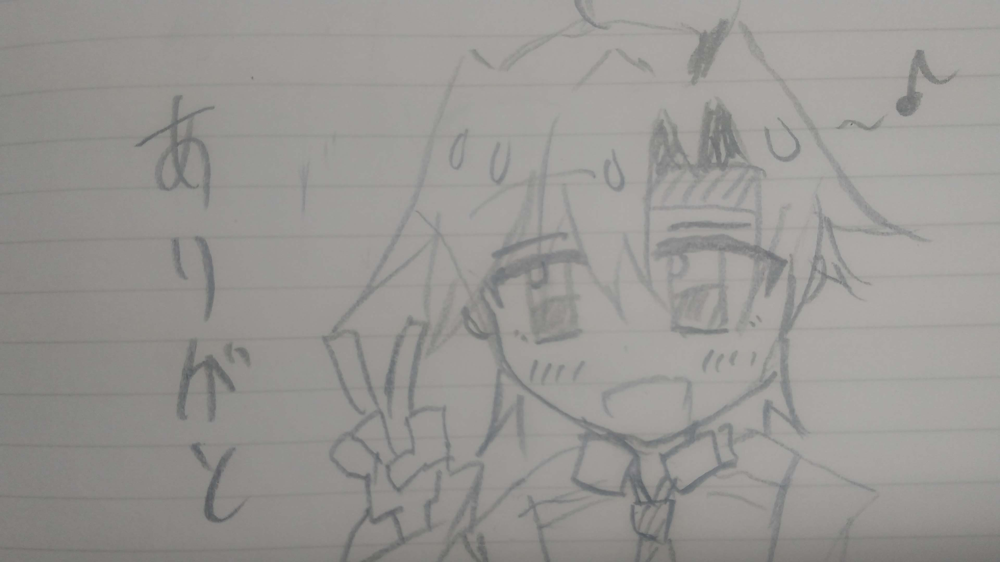

このコラムを読んでいるということはきっと今頃私は南高から卒業していると思います。実際卒業式は終わりました…。そんな私がなぜ今頃になってwebサイトを作っているんでしょうね。それにはいくつか理由があるのですが、一番はやっぱり前のサイトが更新できなくなったからですね。先輩方から数理情報部には公式サイトがあるということをきいていたのですが…現在引き継ぎがうまくいかなかったのか、サイトのことを知っている人がいなくなってしまいました。誰が権限をもっているんでしょうか…？
という経緯で新しくサイトを作ることになりました。あと、もう一つの理由は「名人」って奴に頼まれたからです。「名人」ってのは私の一つ上の先輩で19代目部長なのですが、いかんせん…無茶な要求をしてくる男でした…。しかし、完璧かつ天才の私は彼の要求にすべて答えました。プリクラ、youtubeのOP、ED…etc
彼の要求には実はwebサイト制作があったのですが、残念ながら名人が卒業してしまい、彼の在学中に完成させることができませんでした。…そしてついに私にも卒業の時期がやってきました。この時にはすっかりwebサイトの事を忘れていました。
ですか……ほんとたまたま、思い出しました。
名人の要求にすべて答えてきた私は最後の大仕事だと思い作業に取り掛かりました。作成の際には過去の先輩方が作ったサイトを参考にして取り組んでみました。
しっかり出来ているか心配です(;^ω^)、基本的には骨組みだけを用意してあとは細かい作業は後輩たちに引き継げるようにしてみようと考えています。
最後に、私はこれで思い残すことなく数理情報部を去ることができます。命令はすべて果たしました。あとはyoutubeだけですかね…。私はしっかり動画を作って投稿しました。なので私は偉いです。でも、現在は投稿が途切れているのでまた復活させてほしいですね。なにやら後輩たちはyoutubeの活動で秘策がありそうなので、楽しみにしています。
私は数理情報部にいたことを誇りに思い、この3年間で仲間達と共に得た思い出は大切なものです。今後の数理情報部を任せました。
